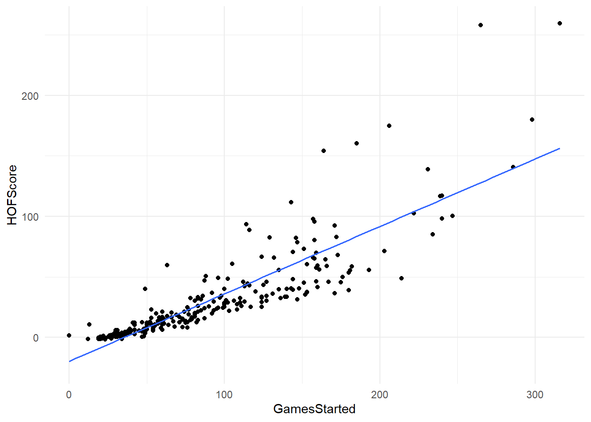
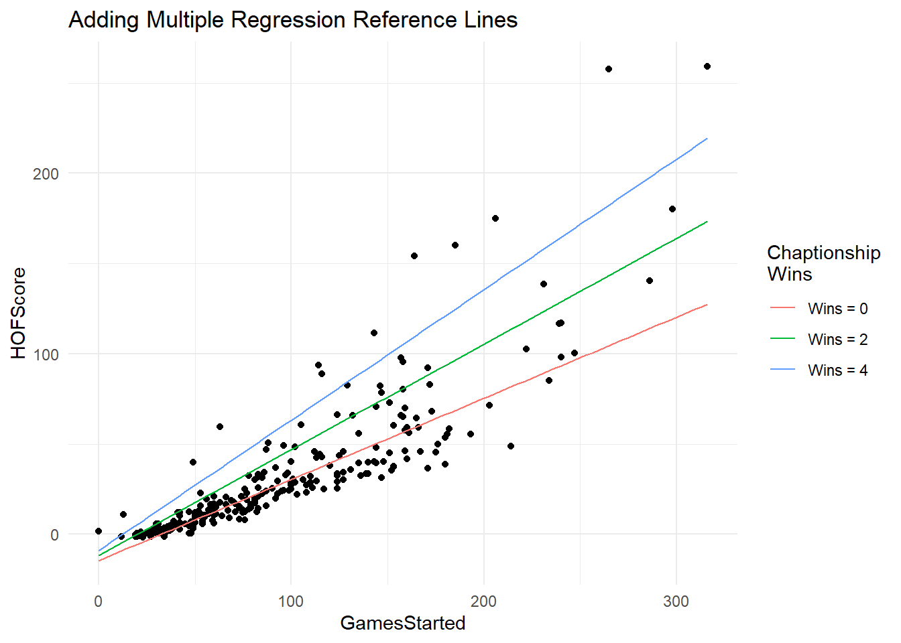
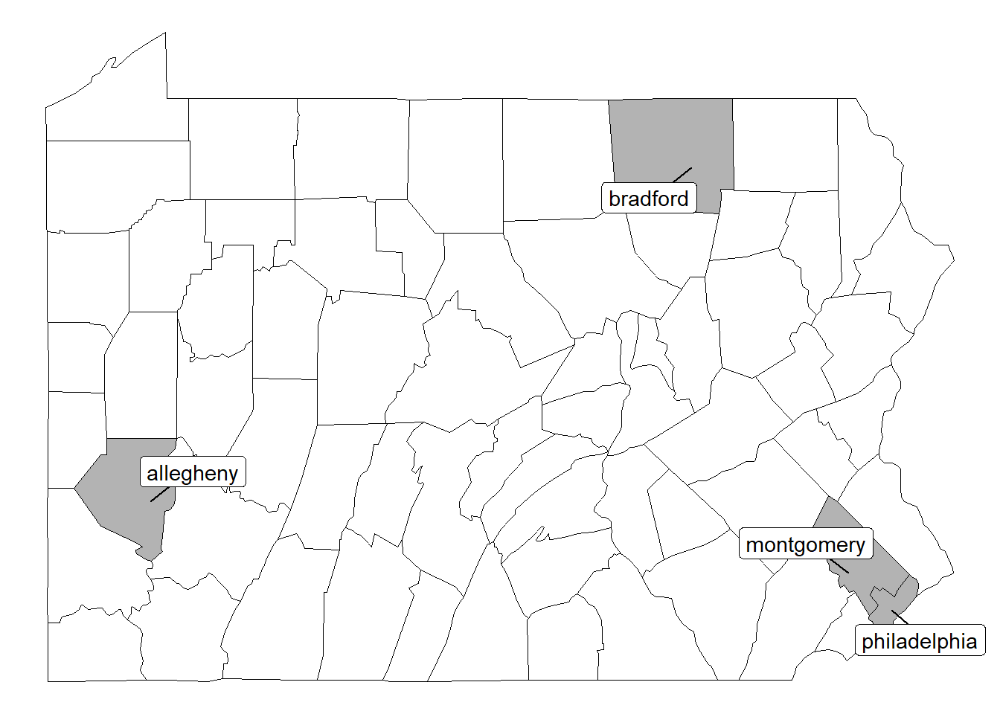
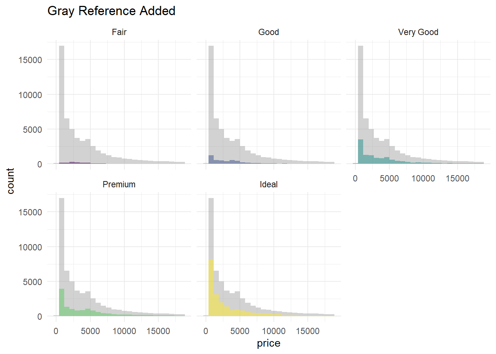

Annotations
In this section we look at ways to add elements to your visualization that may add clarity. These can include (but are not limited to) text labels, reference lines, arrows, and rectangles, etc.
1 Adding Text to User Defined Locations
To add text to a specific location, use gf_text( ) and specify the coordinates where you want the text located.
Example: gf_text(x = 5 , y = 10 , label = “Label Text”)
Specify the some aesthetics of your labels using the following options:
Color: gf_text( , color = “Color Name”)
Fontface (Plain, Bold, Italic): gf_text( , fontface = “plain”)
Family (Sans, Serif, Mono): gf_text( , family = “sans”)
Size: gf_text( , size = 3)
Angle: gf_text( , angle = 30)
gf_dist("chisq", df=5) %>%
gf_dist("chisq", df=10, col="orange") %>%
gf_dist("chisq", df=20, col="darkcyan", linetype = "dashed") %>%
gf_theme(theme_classic()) %>%
gf_text(x = 7, y = 0.12, label = "df = 5", hjust = "left") %>%
gf_text(x = 15, y = 0.08, label = "df = 10", color = "orange", hjust = "left") %>%
gf_text(x = 26, y = 0.05, label = "df = 20", color = "darkcyan", hjust = "left") %>%
gf_labs(title = "Adding Labels & Changing Color")gf_dist("chisq", df=5) %>%
gf_dist("chisq", df=10, col="orange") %>%
gf_dist("chisq", df=20, col="darkcyan", linetype = "dashed") %>%
gf_theme(theme_classic()) %>%
gf_text(x = 7, y = 0.12, label = "plain", hjust = "left", fontface = "plain") %>%
gf_text(x = 15, y = 0.08, label = "bold", color = "orange", hjust = "left", fontface = "bold") %>%
gf_text(x = 26, y = 0.05, label = "italic", color = "darkcyan", hjust = "left", fontface = "italic") %>%
gf_labs(title = "Changing Fontface of Labels")gf_dist("chisq", df=5) %>%
gf_dist("chisq", df=10, col="orange") %>%
gf_dist("chisq", df=20, col="darkcyan", linetype = "dashed") %>%
gf_theme(theme_classic()) %>%
gf_text(x = 7, y = 0.12, label = "sans", hjust = "left", family = "sans") %>%
gf_text(x = 15, y = 0.08, label = "serif", color = "orange", hjust = "left", family = "serif") %>%
gf_text(x = 26, y = 0.05, label = "mono", color = "darkcyan", hjust = "left", family = "mono") %>%
gf_labs(title = "Changing Font of Labels")gf_dist("chisq", df=5) %>%
gf_dist("chisq", df=10, col="orange") %>%
gf_dist("chisq", df=20, col="darkcyan", linetype = "dashed") %>%
gf_theme(theme_classic()) %>%
gf_text(x = 7, y = 0.12, label = "size = 3", hjust = "left", size = 4) %>%
gf_text(x = 15, y = 0.08, label = "size = 5", color = "orange", hjust = "left", size = 5) %>%
gf_text(x = 26, y = 0.05, label = "size = 7", color = "darkcyan", hjust = "left", size = 7) %>%
gf_labs(title = "Changing Size of Labels")gf_dist("chisq", df=5)%>%
gf_theme(theme_classic()) %>%
gf_text(x = 7, y = 0.12, label = "Angle = 30", angle = 30, hjust = "left") %>%
gf_labs(title = "Adjust angle of labels")The default location for the label will match the center of the label to the coordinates specified. Sometimes this isn’t what we want. There are a few ways to change how the coordinates are used to locate a label.
hjust = left the coordinates mark the left of the label
hjust = right the coordinates mark the right of the label
hjust = inward the label will be adjusted to be within the graph space (e.g. if it would go off the left, it will shift right, if it would go off to the right, it would shift left)
default = gf_dist("chisq", df=5)%>%
gf_theme(theme_classic()) %>%
gf_text(x = 7, y = 0.12, label = "Default (Center)")
left = gf_dist("chisq", df=5)%>%
gf_theme(theme_classic()) %>%
gf_text(x = 7, y = 0.12, label = "hjust = left", hjust = "left")
right = gf_dist("chisq", df=5)%>%
gf_theme(theme_classic()) %>%
gf_text(x = 7, y = 0.12, label = "hjust = right", hjust = "right")
inward = gf_dist("chisq", df=5)%>%
gf_theme(theme_classic()) %>%
gf_text(x = 7, y = 0.12, label = "hjust = inward", hjust = "inward")
grid.arrange(default, left, right, inward)1.1 Adding Text using Annotate
You may notice that gf_text looks a bit fuzzy/pixilated/bold. To make a more crisp text annotation, you can also borrow from the ggplot annotate using + to add layers (instead of %>%).
Example: gf_plot() + annotate(“text”, x = 5, y = 1, label = “Text Label”)
gf_dist("chisq", df=5) %>%
gf_dist("chisq", df=10, col="orange") %>%
gf_dist("chisq", df=20, col="darkcyan", linetype = "dashed") %>%
gf_theme(theme_classic()) %>%
gf_labs(title = "Adding Labels Using Annotate") +
annotate("text", x = 7, y = 0.12, label = "df = 5", hjust = "left") +
annotate("text", x = 15, y = 0.08, label = "df = 10", color = "orange", hjust = "left") +
annotate("text", x = 26, y = 0.05, label = "df = 20", color = "darkcyan", hjust = "left")2 Adding Text to Locations Based on Data
To add text to a specific location based on data, you use the same gf_text( ) command, but instead of specifying x and y directly, we use the ggformula Y ~ X to either supply variable values.
2.1 Both X & Y Defined by Variables in Dataset
In the following example, both X and Y locations of the labels we’ll use are defined by variables in the dataset. The general formul we’ll use is defined by:
Example: gf_text( Y ~ X , data = Dataset , label = ~ Var )
Note, you can use hjust or vjust to adjust horizontally and/or vertically. Additionally, you can specify an amount to “nudge” the label in a certain direction.
gf_point(HOFScore~GamesStarted, data = Quarterbacks) %>%
gf_labs(y = "Hall of Fame Score", x = "Number of Games Started", title = "Labels without Nudge") %>%
gf_text(HOFScore~GamesStarted, data = subset(Quarterbacks, GamesStarted > 250), label = ~Player, hjust = "right")gf_point(HOFScore~GamesStarted, data = Quarterbacks) %>%
gf_labs(y = "Hall of Fame Score", x = "Number of Games Started", title = "Labels with nudge_x = -3") %>%
gf_text(HOFScore~GamesStarted, data = subset(Quarterbacks, GamesStarted > 250), label = ~Player, hjust = "right", nudge_x = -3)2.2 Either X or Y is Defined by Variables in Dataset
Suppose we only have one variable in our dataset to specify a location. In that case, we can specify the additional location elements needed. For example, in the dotplot below we can specify salary, but we need a y-axis height specified. This isn’t in our dataset, so we can provide R with a specified height of 0.1.
Example: gf_text( 5 ~ X , data = Dataset , label = ~NameVar )
gf_dotplot(~Salary, data = BaseballSalaries2019, binwidth = 0.3) %>%
gf_text(0.1~Salary, data = subset(BaseballSalaries2019, Salary >= 40), label = ~Name, hjust = "inward")Alternatively, in the example below we have the y-variable (birhts) but we only want to label he end of the lines. In this case we can specify where exactly the x-location is by using as.Date(“1978-12-31”).
Note the text labels are borrowing the same color aestheic from the line graph layer previously. Additionally, it may help to adjust the graph so the labels can be seen. We can do this by either expanding the visual range or adjusting the x-axis range.
gf_line(births~date, data = Births78, col = ~wday) %>%
gf_text(births~as.Date("1978-12-31"), data = subset(Births78, date > as.Date("1978-12-24")), label = ~wday, hjust = "left") %>%
gf_theme(legend.position = "none") %>%
gf_refine(scale_x_date(expand = expansion(add = 25))) %>%
gf_labs(title = "Add Labels & Expand Visual Range")gf_line(births~date, data = Births78, col = ~wday) %>%
gf_text(births~as.Date("1978-12-31"), data = subset(Births78, date > as.Date("1978-12-24")), label = ~wday, hjust = "left") %>%
gf_theme(legend.position = "none") %>%
gf_lims(x = c(as.Date("1978-01-01"), as.Date("1979-01-03"))) %>%
gf_labs(title = "Add labels & Ajust X-Axis Range")2.3 Locations Calculated From Data
In this last example, we’ll how how we can calculate a location based on data, and then use those calculated values to define the location of the labels.
2.3.1 Have R Calculate Location using Summary Function
In the following example, we’ll use the stat = “summary” option to have R auto-calculate the average of different groups.
In the following example we’ll see a few things.
If we do not specify x and y directly, R will “borrow” those locations from previous layers of our visualization. In this case, it borrows the location from the jitter plot first layer.
We specify only labeling the right-end of the reference lines we added using the subset function.
We specify the location using stat = “summary” which will by default calculate the mean for that group.
Instead of using hjust = “left”, I used hjust = -0.1 to slightly nudge the labels away from the reference lines.
gf_jitter(WeightGain~Amount, data=rats.tidy, color=~Source, alpha = 0.4, shape = ~Source, position = position_jitterdodge(jitter.width = 0.1, dodge.width = 0.2)) %>%
gf_line(WeightGain~Amount, color = ~Source, data=rats.tidy, group=~Source, stat="summary", linetype = ~Source, size = 2) %>%
gf_labs(y = "Weight Gain", x = "Amount of Protein", title = "Add labels at summary statistic") %>%
gf_text(data = subset(rats.tidy, Amount == "High"), label = ~Source, stat = "summary", hjust = -0.1) %>%
gf_theme(legend.position = "none")## No summary function supplied, defaulting to `mean_se()`
## No summary function supplied, defaulting to `mean_se()`2.3.2 Create New Dataset of Values
In the following example, a new dataset is created where the average sepal length & width are calculated. Those values are stored in a separate dataset than the original data (although they don’t have to be!) and used as an additional layer on the plot below.
Note the gf_text( ) command will display a text label while the gf_label( ) command will display a text with an opaque rectagle around it. This is helpful if you have overlapping items and you want to highlight the label specifically.
data(iris)
irisLabels = iris %>%
group_by(Species) %>%
mutate(Sepal.Width.Ave = mean(Sepal.Width),
Sepal.Length.Ave = mean(Sepal.Length))
gf_point(Sepal.Length~Sepal.Width, data=iris, color = ~Species) %>%
gf_text(Sepal.Length.Ave~Sepal.Width.Ave, label=~Species, data = irisLabels) %>%
gf_theme(legend.position = "none") %>%
gf_labs(title = "gf_text( ) (hard to read)")gf_point(Sepal.Length~Sepal.Width, data=iris, color = ~Species) %>%
gf_label(Sepal.Length.Ave~Sepal.Width.Ave, label=~Species, data = irisLabels) %>%
gf_theme(legend.position = "none") %>%
gf_labs(title = "gf_label( ) (easier to read)")2.3.3 Use Calculated Data Values
In the dataset below, there are columns of calculated percentages of patients as well as cumulative percentage of patients. To specify the exact location of the numeric labels, I devised a mathematical formula based on the cumulative percentage, and percentage, and used the number of patients in each category to label each portion of each bar.
Alternatively, one can use the position adjustment option with the gf_text command:
Example: gf_text( , position = position_stack(vjust = 0.5))
gf_col(Treatment~PercentPatients, data=clinical, fill=~Response) %>%
gf_refine(scale_fill_brewer(palette = "RdYlGn", direction = -1)) %>%
gf_text(Treatment~(100-CumPercent+PercentPatients/2), label=~round(PercentPatients, digits = 0)) %>%
gf_labs(x = "Cumulative Percentage of Patients", title = "Use Formula to Specify Location of Labels")gf_col(Treatment~PercentPatients, data=clinical, fill=~Response) %>%
gf_refine(scale_fill_brewer(palette = "RdYlGn", direction = -1)) %>%
gf_text(Treatment~PercentPatients, label=~round(PercentPatients, digits = 0), position = position_stack(vjust = 0.5)) %>%
gf_labs(x = "Cumulative Percentage of Patients", title = "Adjust Position using position_stack & vjust")3 Overlapping Text Labels
Within the gf_text command, we do have the option to check for overlapping points. We are a bit limitted in how those labels are then displayed if we adjust for overlapping points.
Example: gf_text( , check_overlap = TRUE)
gf_dotplot(~Salary, data = BaseballSalaries2019, binwidth = 0.3) %>%
gf_text(0.1~Salary, data = subset(BaseballSalaries2019, Salary >= 28), label = ~Name) %>%
gf_labs(title = "Plot All Names Earning 28+ Million", subtitle = "Note many overlapping names")gf_dotplot(~Salary, data = BaseballSalaries2019, binwidth = 0.3) %>%
gf_text(0.1~Salary, data = subset(BaseballSalaries2019, Salary >= 28), label = ~Name, check_overlap = TRUE) %>%
gf_labs(title = "Use option check_overlap = TRUE")3.1 GGrepel
Allowing for a bit more flexibility in overlapping labels is the package ggrepel. Further - this article covers a wide array of things you can do with ggrepel.
Unlike using gf_text to add a layer, geom_text_repel will be “added” on as the last layer to your plot (using + instead of %>%).
Example: gf_plot( Y ~ X ) + geom_text_repel( )
The options within geom_text_repel will mirror those of ggplot2. Generally speaking, instead of the Y~X formula, we’ll specify these variables as well as the labels in an aes( ) option.
Example: + geom_text_repel( data = DatasetInfo , aes(y = YVar , x = XVar, label = LabelVar))
Further, you can specify the size of the labels, the shortest segment that will be drawn (e.g. only draw segments if they’re longer than 0.5), and box.padding (a buffer between labels). An example below implements these options.
gf_point(HOFScore~GamesStarted, data = Quarterbacks) %>%
gf_labs(y = "Hall of Fame Score", x = "Number of Games Started", title = "Label Points Without GGrepel") %>%
gf_text(HOFScore~GamesStarted, data = subset(Quarterbacks, GamesStarted > 180 | HOFScore > 100), label = ~Player, hjust = "right", nudge_x = -3, size = 3)gf_point(HOFScore~GamesStarted, data = Quarterbacks) %>%
gf_labs(y = "Hall of Fame Score", x = "Number of Games Started", title = "Label Points WITH GGrepel") +
geom_text_repel(data = subset(Quarterbacks, GamesStarted > 185 | HOFScore > 100), aes(y = HOFScore, x = GamesStarted, label = Player), min.segment.length = 0.5, box.padding = 0.5, size = 3)
Below is an example where the x value is from the dataset, but the y location is a numeric value (e.g. 0). Note, ggrepel may change as you rerun your code (as it may use a random generator to determine spacing). In this case, you can specify a seed to keep the randomization and change of the label location to a minimum.
Example: set.seed(123)
set.seed(123)
gf_dotplot(~Salary, data = BaseballSalaries2019, binwidth = 0.3) %>%
gf_labs(title = "GGrepel in Dotplot") +
geom_text_repel(data = subset(BaseballSalaries2019, Salary >= 30), aes(y = 0, x = Salary, label = Name), max.overlaps = Inf, size = 3, min.segment.length = 0, nudge_y = 0.1, box.padding = 0.7)4 Plotting Labels as Data/Points
Alternatively, you don’t need to use the gf_text( ) command as an added layer on top of a graph, instead you can merely plot the actual labels as “points” instead.
gf_text(PercentFat~Age, data=fat, label = ~Sex, color = ~Sex) %>%
gf_theme(legend.position = "none") %>%
gf_labs(y = "Percent Body Fat", title = "Use Text as Points", subtitle = "Color By Gender") 5 Adding Reference Points
Specific reference points can be added using a gf_point( ) layer on top of your plot. You can adjust the size and color to make those specific points stand out.
In the example below, the capital is a much larger dot colored red.
world = map_data("world")
japan = map_data("world", "japan")
gf_polygon(lat~long, data=japan, group = ~group, fill=NA, color = "black", size = 0.1) %>%
gf_point(lat~long, data=subset(world.cities, country.etc == "Japan"), alpha=0.2, size=~pop/1000000, group = NA) %>%
gf_point(lat~long, data=subset(world.cities, country.etc == "Japan" & capital == 1), size=~pop/1000000, color = "red", alpha = 0.6, group = NA) %>%
gf_theme(theme_map()) %>%
gf_refine(coord_equal()) %>%
gf_theme(legend.position = "none")Alternatively, one can calculate values and use those the plot reference points (e.g. the “middle” of a group).
irisLabels = iris %>%
group_by(Species) %>%
mutate(Sepal.Width.Ave = mean(Sepal.Width),
Sepal.Length.Ave = mean(Sepal.Length)) %>%
rename(NewSpecies = Species)
gf_point(Sepal.Length~Sepal.Width, data=iris, color = ~Species, alpha = 0.3) %>%
gf_point(Sepal.Length.Ave~Sepal.Width.Ave, color=~NewSpecies, data = irisLabels, size = 5) %>%
gf_theme(legend.position = "none")6 Adding Reference Lines
To add reference lines, we’ll start with simple vertical lines, horizontal lines, and lines with defined slope & intercept.
Lines can have a variety of adjustments (e.g. color, linetype, width, opacity). Many of those are included in the ggformula reference guide.
For linetype specifically, the following shows the names of several differnt linetypes that can be specified.
show_line_types()
6.1 Vertical Lines
To add vertical reference lines to your plot, use the gf_vline( ) command.
Vertical Lines: gf_vline( xintercept = 100)
gf_point(HOFScore~GamesStarted, data = Quarterbacks) %>%
gf_labs(y = "Hall of Fame Score", x = "Number of Games Started", title = "Adding Vertical Line") %>%
gf_vline(xintercept = mean(~GamesStarted, data = na.omit(Quarterbacks))) %>%
gf_text(200~50, label = "Below\nAverage", color = "gray70") %>%
gf_text(200~150, label = "Above\nAverage", color = "gray70") 6.2 Horizontal Lines
To add horizontal reference lines to your plot, use the gf_hline( ) command.
Horizontal Lines: gf_hline( yintercept = 4)
gf_point(HOFScore~GamesStarted, data = Quarterbacks) %>%
gf_labs(y = "Hall of Fame Score", x = "Number of Games Started", title = "Adding Horizontal Line") %>%
gf_hline(yintercept = 100) %>%
gf_text(200~100, label = "HOF Worthy", color = "gray70") %>%
gf_text(50~300, label = "Not in HOF", color = "gray70", hjust = "inward") 6.3 Sloped Lines
To add sloped reference lines to your plot, use the gf_abline( ) command.
Sloped Line: gf_abline( slope = 1, intercept = 0)
gf_point(Husband~Wife, data=MarriageAges, alpha = 0.5) %>%
gf_labs(x = "Wife Age at Marriage", y = "Husband Age at Marriage" , title = "Adding abline") %>%
gf_abline(slope = 1 , linetype = "dashed" , color = "gray50") %>%
gf_text(70~20, hjust = 0, label = "Husband Older" , size = 6 , color = "gray80") %>%
gf_text(30~55, hjust = 0, label = "Wife Older", size = 6 , color = "gray80" )6.4 QQ plots
Specifically for QQ plots we can utilize the function gf_qqline to add an appropriate reference line to assess normality visually.
Example: gf_qq(~Var , data = Dataset ) %>% gf_qqline()
gf_qq(~Salary, data = BaseballSalaries2019) %>%
gf_qqline() %>%
gf_labs(title = "QQ plot with reference line added")6.5 Regression
There are a few ways to add regression lines and intervals to your plot.
- Built in gf_lm function (simple linear regression)
- Manually specifying a function using gf_fun
- Adding smooth curves (e.g. Loess) gf_smooth
6.5.1 Simple Linear Regression
The examples below use the gf_lm() defaults which utilize simple linear regression models. You can still alter the color and linetype of the trendline and also add confidence intervals for the mean response and prediction bands.
gf_point(HOFScore~GamesStarted, data = Quarterbacks) %>%
gf_lm()
gf_point(HOFScore~GamesStarted, data = Quarterbacks) %>%
gf_lm(color = "black", linetype = "dashed")gf_point(HOFScore~GamesStarted, data = Quarterbacks) %>%
gf_lm(interval = "confidence", alpha = 0.3, color = "black", linetype = "dashed")gf_point(HOFScore~GamesStarted, data = Quarterbacks) %>%
gf_lm(interval = "prediction", alpha = 0.3, fill = "blue", color = "black", linetype = "dashed")gf_point(HOFScore~GamesStarted, data = Quarterbacks) %>%
gf_lm(interval = "prediction", alpha = 0.1, fill = "blue", color = "black", linetype = "dashed")%>%
gf_lm(interval = "confidence", alpha = 0.3, color = "black", linetype = "dashed")
The following example manually specifies the function to be plotted.
simple.model = lm(HOFScore~GamesStarted, data = Quarterbacks)
summary(simple.model)##
## Call:
## lm(formula = HOFScore ~ GamesStarted, data = Quarterbacks)
##
## Residuals:
## Min 1Q Median 3Q Max
## -50.783 -9.312 -0.436 5.953 129.951
##
## Coefficients:
## Estimate Std. Error t value Pr(>|t|)
## (Intercept) -19.75059 2.36388 -8.355 4.76e-15 ***
## GamesStarted 0.55698 0.02128 26.169 < 2e-16 ***
## ---
## Signif. codes: 0 '***' 0.001 '**' 0.01 '*' 0.05 '.' 0.1 ' ' 1
##
## Residual standard error: 20 on 247 degrees of freedom
## (2 observations deleted due to missingness)
## Multiple R-squared: 0.7349, Adjusted R-squared: 0.7339
## F-statistic: 684.8 on 1 and 247 DF, p-value: < 2.2e-16gf_point(HOFScore~GamesStarted, data = Quarterbacks) %>%
gf_fun(-19.75 + 0.557 * GamesStarted~ GamesStarted) %>%
gf_labs(title = "Manually Adding Function to Graph")6.5.2 Plotting Transformations
To plot other models, one option is to create a model, create a function, and plot the function. The following examples explore differnet log models and polynomial models.
log.model = lm(log(HOFScore)~GamesStarted, data = Quarterbacks)
log.F = makeFun(log.model)
poly2.model = lm(HOFScore~I(GamesStarted^2)+GamesStarted, data = Quarterbacks)
poly2.F = makeFun(poly2.model)
poly3.model = lm(HOFScore~poly(GamesStarted, 3), data = na.omit(Quarterbacks))
poly3.F = makeFun(poly3.model)
gf_point(HOFScore~GamesStarted, data = Quarterbacks) %>%
gf_fun(log.F(GamesStarted)~GamesStarted, linetype = ~"Log Model") %>%
gf_fun(poly2.F(GamesStarted)~GamesStarted, linetype = ~"Polynomial 2 Model") %>%
gf_theme(legend.position = "top", legend.title = element_blank()) %>%
gf_refine(coord_cartesian(ylim = c(0,300)))gf_point(HOFScore~GamesStarted, data = Quarterbacks) %>%
gf_fun(poly3.F(GamesStarted)~GamesStarted, linetype = ~"Polynomial 3 Model") %>%
gf_fun(poly2.F(GamesStarted)~GamesStarted, linetype = ~"Polynomial 2 Model") %>%
gf_theme(legend.position = "top", legend.title = element_blank()) %>%
gf_refine(coord_cartesian(ylim = c(0,300)))6.5.3 Multiple Regression
To plot reference lines that account for multiple explanatory variables, it might be helpful to add several lines to your plot. The example below displays a few options for a multiple regression model.
mult.model = lm(HOFScore~GamesStarted * ChampionshipWins, data = Quarterbacks)
mult.F = makeFun(mult.model)
gf_point(HOFScore~GamesStarted, data = Quarterbacks) %>%
gf_fun(mult.F(GamesStarted, ChampionshipWins =0)~GamesStarted, col = ~"Wins = 0") %>%
gf_fun(mult.F(GamesStarted, ChampionshipWins =2)~GamesStarted, col = ~"Wins = 2") %>%
gf_fun(mult.F(GamesStarted, ChampionshipWins =4)~GamesStarted, col = ~"Wins = 4") %>%
gf_labs(title = "Adding Multiple Regression Reference Lines", color = "Chaptionship\nWins")
6.5.4 Smooth Curves
Instead of adding a straight line using gf_lm one can apply a smooth curve using gf_smooth. Additionally there are options within this command to alter what is plotted.
gf_point(HOFScore~GamesStarted, data = Quarterbacks) %>%
gf_smooth()## `geom_smooth()` using method = 'loess'gf_point(HOFScore~GamesStarted, data = Quarterbacks) %>%
gf_smooth(se= TRUE)## `geom_smooth()` using method = 'loess'7 Other Shapes (Rectangles, Arrows, Fill)
Sometimes you’ll want to use other ways to highlight portions of your graphs. This section goes over some of these other ideas for guiding the reader to certain aspects of your graph.
7.1 Rectangles
To add rectangles to your plot, we can use the gf_rect command. You’ll want to specify the “corners” of the rectangle using the following formula approach:
Example (outline only): gf_rect(ymin+ymax~xmin+xmax, color = “ColorName”, fill = NA)
Example (fill): gf_rect(ymin+ymax~xmin+xmax, fill = “FillColor”, data = data.frame(), inherit = FALSE, alpha= 0.2)
Note the specification of data = data.frame() here as the variables were not from the dataset, and inherit = FALSE keeps the function from trying to use variables/data from the previous layers.
gf_point(HOFScore~GamesStarted, data = Quarterbacks) %>%
gf_labs(y = "Hall of Fame Score", x = "Number of Games Started", title = "Adding Red Rectangle", subtitle = "At the time of creating this, alpha seems to only work when data & inherit specified") %>%
gf_rect(125+300~250+325, fill = "red", alpha = 0.2)gf_point(HOFScore~GamesStarted, data = Quarterbacks) %>%
gf_labs(y = "Hall of Fame Score", x = "Number of Games Started", title = "Red Rectangle With Proper Alpha Transparency") %>%
gf_rect(125+300~250+325, fill = "red", alpha = 0.2, data = data.frame(), inherit = FALSE)gf_point(HOFScore~GamesStarted, data = Quarterbacks) %>%
gf_labs(y = "Hall of Fame Score", x = "Number of Games Started", title = "Red Rectangle Outline Only") %>%
gf_rect(125+300~250+325, color = "red", alpha = 0.2, data = data.frame(), inherit = FALSE, fill = NA)gf_point(HOFScore~GamesStarted, data = Quarterbacks) %>%
gf_labs(y = "Hall of Fame Score", x = "Number of Games Started", title = "Red Rectangle Dotted Outline") %>%
gf_rect(125+300~250+325, color = "red", fill = NA, linetype = "dashed", size = 2)The following example is translated from the ggplot2 book. This post goes through a similar example using a different type of graph, but similar idea.
#Adjust start date for graph
presidential <- subset(presidential, start > economics$date[1])
gf_line(unemploy~date, data = economics) %>%
gf_rect(-Inf+Inf~start+end, data = presidential, fill=~party, alpha = 0.2, inherit = FALSE) %>%
gf_vline(xintercept = ~as.numeric(start), data = presidential, color = ~party, show.legend = FALSE) %>%
gf_text(2500~start, data = presidential, label = ~name, size = 3, hjust = "left") %>%
gf_refine(scale_fill_manual(values = c("blue", "red")),
scale_color_manual(values = c("blue", "red")))7.2 Arrows & Line Segments
To add line segments and/or arrows to your graph, you can use the gf_segment or gf_curve commands. Use segment for straight lines and curve for curved lines.
Example: gf_curve( ymin + ymax ~ xmin + xmax , curvature = 0.3, arrow = arrow() )
Note for curvature: negative values will produce “left hand curves” while positive values produce “right hand curves”. Zero will produce a straight line.
gf_linerange(fct_reorder(Name, Salary)~0+Salary, data=LAD, size = 2, color = ~(CumSalary <=31 | Salary > 30)) %>%
gf_refine(guides(color = "none"), scale_color_manual(values = c("gray80", "darkcyan"))) %>%
gf_labs(y="Player", x = "Salary (in Millions)", title = "Adding Arrorws to Graph") %>%
gf_rect(0.5+19.5~-0.3+5.1, fill = NA, size = 1) %>%
gf_curve(27+7~25+5.5, curvature = -0.3, color = "darkcyan", arrow = arrow(), size = 1) %>%
gf_text(7~20, label = "Kenshaw makes as \nmuch as 19 other \nplayers combined", color = "black", size = 4)7.3 Fill Objects
The following example shows how one might use a fill option in a map to help highlight certain counties.
gf_polygon(lat~long, data = penn, group = ~group, fill = ~(subregion %in% c("montgomery", "deleware", "philadelphia", "bradford", "allegheny")), color = "black", size = 0.05, show.legend = FALSE) %>%
gf_refine(scale_fill_manual(values = c("white", "gray70"))) %>%
gf_theme(theme_map()) +
geom_label_repel(data = subset(centroid.test, subregion %in% c("montgomery", "deleware", "philadelphia", "bradford", "allegheny")), aes(x = mean.long, y = mean.lat, label = subregion), box.padding = 0.5, show.legend = FALSE, fill = "white")
8 Annotating Across Facets
The following examples originally were referenced in the Facets page, but could be discussed here. It may be of interest to add reference items across multiple facets.
8.1 Adding gray layer
To add a gray layer, start by transforming the data (making a “dummy” variable and coloring that gray), and then adding the additional layers on top.
Code to Add Gray Layer gf_plot(Y ~ X , data = transform(Dataset, PanelVar = NULL), color = “gray85”, alpha = 0.4)
gf_point(Petal.Length~Petal.Width, data=iris, color = ~Species) %>%
gf_facet_wrap(~Species) %>%
gf_theme(legend.position = "none") %>%
gf_refine(scale_color_viridis(discrete = TRUE)) %>%
gf_labs(title = "No Gray Reference Dots")gf_point(Petal.Length~Petal.Width, data=transform(iris, Species = NULL), color = "gray65", alpha = 0.4) %>%
gf_point(Petal.Length~Petal.Width, data=iris, color = ~Species) %>%
gf_facet_wrap(~Species) %>%
gf_theme(legend.position = "none") %>%
gf_refine(scale_color_viridis(discrete = TRUE)) %>%
gf_labs(title = "Gray Reference Dots Added")We use similar code as the example above if we want to add bars, lines, area etc to the background. Below is an example of a histgram instead of a scatterplot.
gf_histogram(~price, data = diamonds, fill=~cut, show.legend = FALSE) %>%
gf_facet_wrap(~cut) %>%
gf_labs(title = "No Gray Reference")gf_histogram(~price, data = transform(diamonds, cut = NULL), fill="gray65", show.legend = FALSE) %>%
gf_histogram(~price, data = diamonds, fill=~cut, show.legend = FALSE) %>%
gf_facet_wrap(~cut) %>%
gf_labs(title = "Gray Reference Added")
8.2 Regression Lines
In the following example, we just add regression lines for each type of car using the lm( ) command.
gf_point(Price~Horsepower, data = Cars93, color = ~Type, show.legend = FALSE) %>%
gf_facet_wrap(~Type) %>%
gf_labs(title = "Default Scatterplot")gf_point(Price~Horsepower, data = Cars93, color = ~Type, show.legend = FALSE) %>%
gf_facet_wrap(~Type) %>%
gf_lm(show.legend = FALSE)%>%
gf_labs(title = "Regression Lines Added")gf_point(Price~Horsepower, data = Cars93, color = ~Type, show.legend = FALSE) %>%
gf_facet_wrap(~Type) %>%
gf_lm(show.legend = FALSE) %>%
gf_lm(interval = "confidence", fill = ~Type, alpha = 0.3, show.legend = FALSE)%>%
gf_labs(title = "Confidence Interval for Mean Response Added")gf_point(Price~Horsepower, data = Cars93, color = ~Type, show.legend = FALSE) %>%
gf_facet_wrap(~Type) %>%
gf_lm(show.legend = FALSE) %>%
gf_lm(interval = "prediction", fill = ~Type, alpha = 0.3, show.legend = FALSE)%>%
gf_lm(interval = "confidence", fill = ~Type, alpha = 0.3, show.legend = FALSE)%>%
gf_labs(title = "Prediction & Confidence Bands Added")8.3 Average Points
The following example is taken from the book ggplot2. In order to add the reference points for the means of each of the groups, you first create a new dataset, calculate the averages, and then rename your color/facet variable. When you create a plot, you’ll use the original data to create the facetted plot, then add a layer of just the average points from the newly created dataset.
irisLabels = iris %>%
group_by(Species) %>%
mutate(Sepal.Width.Ave = mean(Sepal.Width),
Sepal.Length.Ave = mean(Sepal.Length)) %>%
rename(NewSpecies = Species)
gf_point(Sepal.Length~Sepal.Width, data=iris, color = ~Species, alpha = 0.3) %>%
gf_point(Sepal.Length.Ave~Sepal.Width.Ave, color=~NewSpecies, data = irisLabels, size = 5) %>%
gf_theme(legend.position = "none") %>%
gf_facet_wrap(~Species)